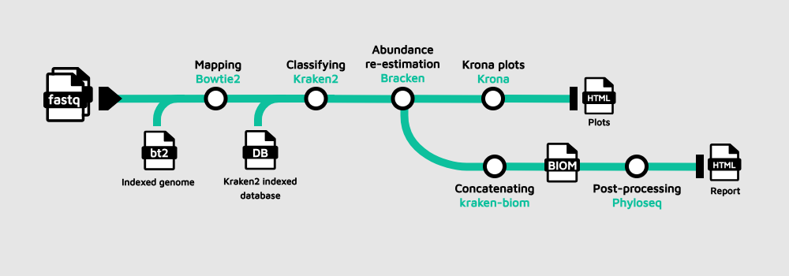
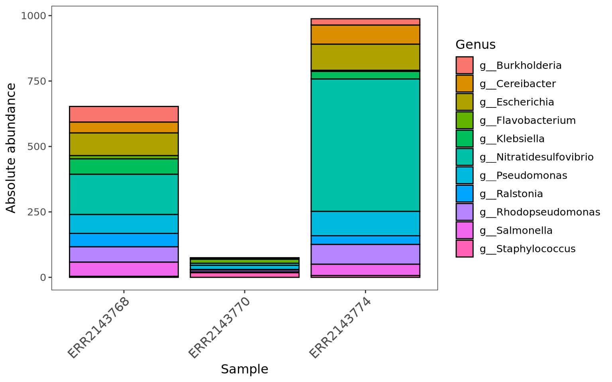
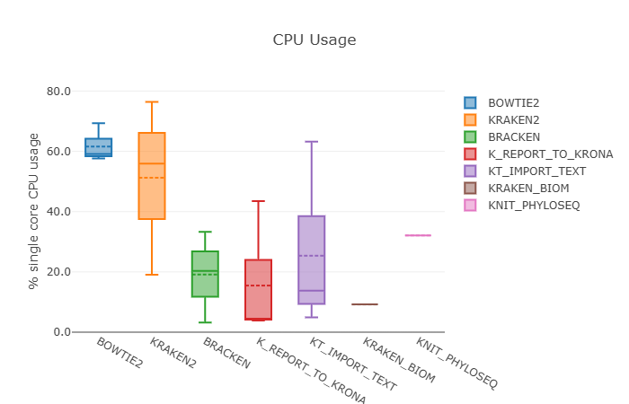

Conditionals, scripts à la carte, report
TaxoFlow metagenomics pipeline
Learning outcomes
After having completed this chapter you will be able to:
- Understand how conditional execution with
ifstatements lets TaxoFlow switch between different input strategies. - Recognise how custom scripts and tools (RMarkdown reports) are integrated into a Nextflow workflow.
- Enable and interpret a native Nextflow execution report to inspect resource usage and performance of the TaxoFlow pipeline.
Overview of the TaxoFlow project
Let’s go to the directory first:
cd /workspaces/nextflow-training/exercises/TaxoFlow
code .
These are the files in the directory
TaxoFlow
├── bin
│ └── report.Rmd
├── data
│ └── samplesheet.csv
├── modules
│ ├── bowtie2.nf
│ ├── bracken.nf
│ ├── kReport2Krona.nf
│ ├── kraken2.nf
│ ├── kraken_biom.nf
│ ├── knit_phyloseq.nf
│ └── ktImportText.nf
├── main.nf
├── nextflow.config
└── workflow.nf
The TaxoFlow pipeline allows to understand:
- How conditional execution is used to adapt to different input formats.
- How custom scripts and analysis reports are integrated as processes.
- How to use Nextflow’s native report to inspect resource usage.
Since on GitHub we cannot store heavy files, we need to download a database for Kraken2/Bracken and an indexed genome for Bowtie2, just run on the terminal:
mkdir -p data/krakendb && cd "$_"
wget --no-check-certificate --no-proxy 'https://zenodo.org/api/records/17708950/files/krakendb.tar.gz/content'
tar -xvzf content
rm -r content
cd -
mkdir -p data/genome && cd "$_"
wget --no-check-certificate --no-proxy 'https://genome-idx.s3.amazonaws.com/bt/TAIR10.zip'
unzip TAIR10.zip
rm -r TAIR10.zip
cd -
We can continue now.
The main entry point is:
main.nf: user‑facing workflow definition.workflow.nf: DSL2workflow TaxoFlowimplementation.modules/*.nf: process modules wrapping the individual tools.nextflow.config: parameters, paths and native report configuration.
The workflow at a glance

The TaxoFlow example is a small metagenomics workflow that:
- Uses Bowtie2 to remove host (Arabidopsis; only for educational purposes) reads.
- Classifies remaining reads with Kraken2 and Bracken.
- Generates interactive Krona plots and a Phyloseq HTML report.
- Demonstrates conditional logic, custom scripts and built‑in Nextflow reporting.
main.nf
| main.nf | |
|---|---|
1 2 3 4 5 6 7 8 9 10 11 12 13 14 15 16 17 18 19 20 21 22 23 24 25 26 27 28 29 30 31 32 33 34 35 36 37 38 39 40 41 42 43 44 45 46 47 | |
workflow.nf
| workflow.nf | |
|---|---|
1 2 3 4 5 6 7 8 9 10 11 12 13 14 15 16 17 18 19 20 21 22 23 24 25 26 27 28 29 30 31 32 33 34 35 36 37 38 39 40 | |
nextflow.config
| workflow.nf | |
|---|---|
1 2 3 4 5 6 7 8 9 10 11 12 13 14 15 16 17 18 19 20 | |
Conditional execution with if statements
TaxoFlow showcases two layers of conditional logic:
- At the top‑level workflow (
main.nf) to decide how to build the read channel. - Inside the
TaxoFlowworkflow (workflow.nf) to decide whether to run downstream reporting steps.
Choosing the input strategy in main.nf
In main.nf:
| main.nf | |
|---|---|
9 10 11 12 13 14 15 | |
Here, the if statement decides how inputs are parsed:
- Branch 1 –
params.readsis set:- Use
channel.fromFilePairs(params.reads, checkIfExists:true)to build a channel of paired‑end read files directly from a glob pattern. - This is convenient when your reads are already organised on disk and you do not need a sample sheet.
- Use
- Branch 2 –
params.readsis not set:- Use
channel.fromPath(params.sheet_csv)followed by.splitCsv(header:true)to read a CSV samplesheet. - Map each row into a tuple:
tuple(row.sample_id, [file(row.fastq_1), file(row.fastq_2)]). - This is useful when metadata such as
sample_idis stored in a table.
- Use
In both cases the result is a single channel reads_ch that emits:
- A
sample_idvalue. - A list with the two FASTQ files.
The rest of the pipeline (TaxoFlow(...)) is independent of how reads_ch was created, illustrating a common pattern:
- Use
ifblocks early in the workflow to normalize different input formats into a canonical channel shape.
If structure
Abstracting the if block from main.nf:
| if statement | |
|---|---|
1 2 3 4 5 | |
else statement is not always required.
Conditional reporting inside workflow.nf
In workflow.nf:
| workflow.nf | |
|---|---|
29 30 31 32 | |
The inner if (params.sheet_csv) controls whether to:
- Merge Bracken outputs across samples with
KRAKEN_BIOM(BRACKEN.out.collect()). - Render a Phyloseq HTML report with
KNIT_PHYLOSEQ(KRAKEN_BIOM.out).
Key ideas:
- When running from a samplesheet, we know which samples belong together, so it makes sense to aggregate them into a single biom file and downstream report.
- When running from raw file pairs only (
params.reads),params.sheet_csvisnullinnextflow.config, so the extra report is skipped.
This is a clean way to:
- Keep core processing always enabled.
- Toggle extra reporting or QC steps based on parameters.
Exercise: Now, you want to control the entire execution of the workflow given a parameter provided in nextflow.config or through the terminal. How would you implement it?
Organize your ideas
- Create the parameter and initialize it in
nextflow.config. - Identify in which file you are going to use it.
- Determine the scope of the parameter, meaning which or which processes it is going to control.
- Implement it and execute the pipeline with:
nextflow run main.nf --sheet_csv 'data/samplesheet.csv' --yourParameter
Answer
Find below how the files would be modified.
nextflow.config
| nextflow.config | |
|---|---|
1 2 3 4 5 6 7 8 9 10 11 12 13 14 15 16 17 18 19 20 21 | |
main.nf
| main.nf | |
|---|---|
1 2 3 4 5 6 7 8 9 10 11 12 13 14 15 16 17 18 19 20 21 22 23 24 25 26 27 28 29 30 31 32 33 34 35 36 37 38 39 40 41 42 43 44 45 46 47 48 | |
Custom scripts and analysis modules
TaxoFlow uses several modules that wrap external command‑line tools (Bowtie2, Kraken2, Bracken, Krona), plus a custom RMarkdown report to explore taxonomic profiles.
Custom RMarkdown report with KNIT_PHYLOSEQ
The Phyloseq report is driven by the module KNIT_PHYLOSEQ and the RMarkdown file under bin/:
| modules/knit_phyloseq.nf | |
|---|---|
1 2 3 4 5 6 7 8 9 10 11 12 13 14 15 16 17 18 19 | |
Where do we store custom scripts?
Whenever you decide to use custom scripts, Nextflow will search for them in the directory `bin/`. Thus, you just need to place them in this folder.
The execution of the RMarkdown script is a bit tricky since it requires a path that usually is given just a string, although here, we had to use Bash variables to create this path. This is a specific case, you don’t need to pay too much attention to this, just keep in mind that running custom scripts is usually problematic.
This script then generates an HTML report with:
- Absolute and relative abundance bar plots.
- α‑ and β‑diversity metrics.
- Heatmaps, ordination and network plots.

As a result, this shows a pattern:
- Keep analysis logic in a domain‑specific script (here RMarkdown).
- Drive it from Nextflow via parameters and inputs.
- Treat the final HTML as just another pipeline output, versioned and reproducible.
Exercise: Within the modules/knit_phyloseq.nf you can notice that some variables like biom_pat and outreport are preceded by a backslash (\). Remove these backslashes, execute the pipeline and see what happens. Then answers: why do you think this was necessary?
Not the same
In Nextflow, it is really important to distinguish Nextflow variables from Bash or environment variables. This is achieved through the use of double quotes in the script section plus adding the escape character (backslash) before Bash variables. More about this
Native Nextflow report for resource usage
TaxoFlow also enables Nextflow’s native HTML execution report, which summarises:
- Wall‑clock time and CPU usage per process.
- Memory usage and I/O statistics.
- Number of tasks, retries and failures.
Enabling the built‑in report
In nextflow.config:
| nextflow.config | |
|---|---|
14 15 16 17 | |
This block tells Nextflow to:
- Generate a single HTML report named
report.htmlat the end of each run. - Place it in the results directory from where you launched Nextflow.
You do not need to change main.nf or workflow.nf to use this feature; it is entirely controlled by configuration.
Running TaxoFlow and inspecting the report
The workflow can be executed without adding anything else:
nextflow run main.nf \
--sheet_csv data/samplesheet.csv
Enabling the report as a parameter
It is possible to generate the report just by adding -with-report <file_name>. More about this
At the end of the execution you should see a message similar to:
Execution report saved to: report.html
Open report.html in a browser. You will find:
- A timeline of all tasks across processes like
BOWTIE2,KRAKEN2,BRACKEN, etc. - A resources table with CPU, memory and time usage per process.
- A tasks section showing how many samples were processed and how long each step took.

This native report complements the domain‑specific Phyloseq HTML:
- The Nextflow report focuses on pipeline performance and resource usage.
- The Phyloseq report focuses on biological interpretation of the metagenomic profiles.
Customizing the report location
- To save the report under the project directory, you can update
file:report { enabled = true file = "${projectDir}/results/performance_report.html" } - This keeps all outputs (taxonomy results, Krona plots, RMarkdown report, Nextflow report) under a single
results/tree.
Summary
- TaxoFlow uses conditional execution both at the entry point and inside the workflow to adapt to different input sources and to toggle optional reporting steps.
- Custom analysis code (RMarkdown, Krona, Phyloseq) is wrapped as Nextflow modules, turning ad‑hoc scripts into reproducible pipeline stages.
- Nextflow’s native execution report provides a built‑in way to understand resource usage and performance, complementing the biological reports produced by the pipeline.